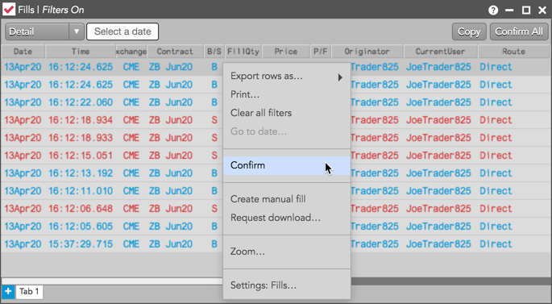
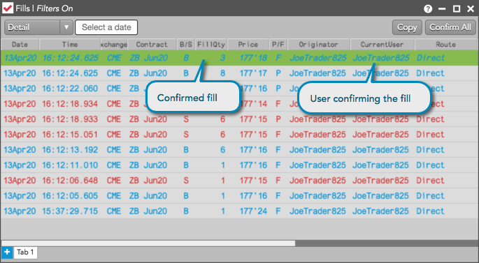
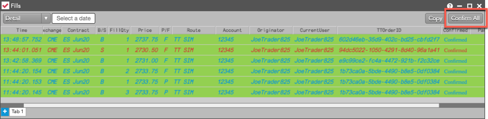

You can confirm fills in the Fills widget by using:
- The Confirm option in the context menu.
- The Confirm button in the optional Confirmed column.
- The Confirm All button on the top right corner of the widget.
Note: You can confirm fills in an account if your Risk Administrator has enabled permissions for you to delete orders in the account. Users with view-only account permissions cannot confirm fills.
Confirming a fill using the menu option
To confirm a fill using the menu option:
- Right-click on a fill row in the Fills widget.
Tip: To select multiple fills, press and hold the Shift or Ctrl key and click multiple rows.
- Click Confirm in the context menu.

The fill is confirmed in the TT system and is highlighted using the "Confirmed Fill" color set in the widget. The Confirmed column displays "Confirmed" and your username is displayed in the CurrentUser column.

Confirming a fill using the Confirm button
To confirm a fill using the Confirm button:
- Ensure that the Confirmed column is shown in the Fills widget. You can show/hide columns using the Fills widget settings.
Click the  (buy fill) or
(buy fill) or  (sell fill) button in the Confirmed column for a fill.
(sell fill) button in the Confirmed column for a fill.
Tip: To confirm multiple fills, press and hold the Shift or Ctrl key and click multiple rows before clicking the Confirm button.
The fill is confirmed in the TT system and is highlighted using the "Confirmed Fill" color set in the widget. The Confirmed column displays "Confirmed" and your username is displayed in the CurrentUser column.

Confirming all fills
To confirm all fills received in the Fills widget, click the Confirm All button on the top right corner of the
widget.

After clicking Confirm All, all fill rows displayed in the Fills view are grayed out and your username is displayed in the CurrentUser column. If the Confirmed column is shown, a checked box appears in the column for all confirmed fills.